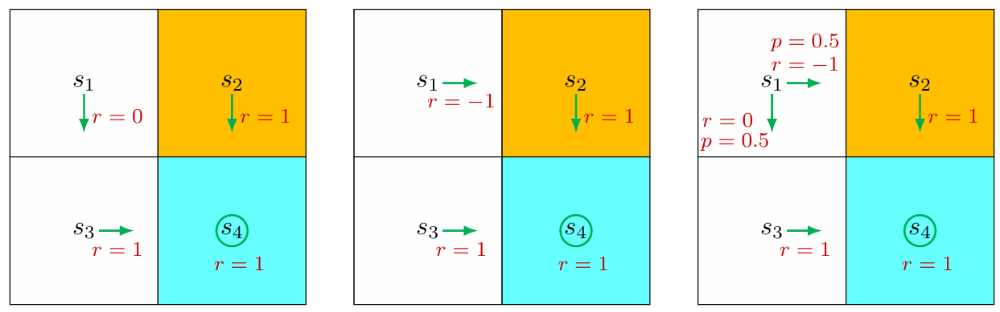
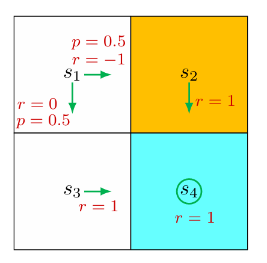
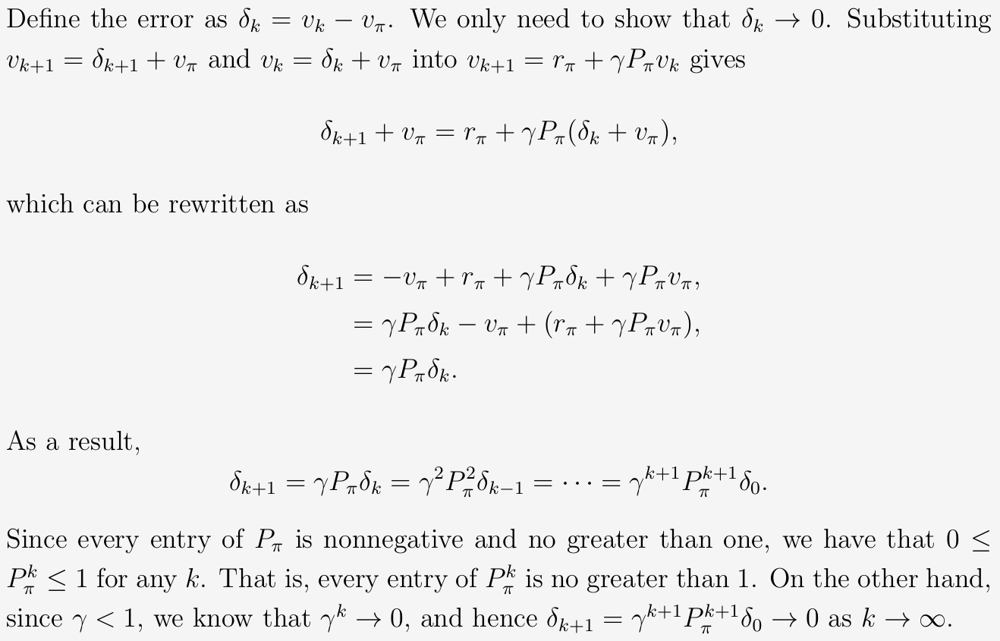

关于 Return

之前说过 return 能够衡量 trajectory 的收益，这里用一个例子来具体说明。
从状态 s 1 s_1 s 1 s 4 s_4 s 4
return 1 = 0 + γ 1 + γ 2 1 + γ 3 1 + ⋯ = γ ( 1 + γ + γ 2 + … ) = γ 1 − γ return 2 = − 1 + γ 1 + γ 2 1 + γ 3 1 + ⋯ = − 1 + γ ( 1 + γ + γ 2 + … ) = − 1 + γ 1 − γ return 3 = 0.5 ( γ 1 − γ ) + 0.5 ( − 1 + γ 1 − γ ) = − 0.5 + γ 1 − γ \begin{align}
\text{return}_1 &=0+\gamma1+\gamma^21+\gamma^31+\dots=\gamma(1+\gamma+\gamma^2+\dots)=\frac{\gamma}{1-\gamma}\\
\text{return}_2&=-1+\gamma1+\gamma^21+\gamma^31+\dots=-1+\gamma(1+\gamma+\gamma^2+\dots)=-1+\frac{\gamma}{1-\gamma}\\
\text{return}_3&=0.5\left(\frac{\gamma}{1-\gamma}\right)+0.5\left(-1+\frac{\gamma}{1-\gamma}\right)=-0.5+\frac{\gamma}{1-\gamma}
\end{align}
return 1 return 2 return 3 = 0 + γ 1 + γ 2 1 + γ 3 1 + ⋯ = γ ( 1 + γ + γ 2 + … ) = 1 − γ γ = − 1 + γ 1 + γ 2 1 + γ 3 1 + ⋯ = − 1 + γ ( 1 + γ + γ 2 + … ) = − 1 + 1 − γ γ = 0.5 ( 1 − γ γ ) + 0.5 ( − 1 + 1 − γ γ ) = − 0.5 + 1 − γ γ
其中 return 3 \text{return}_3 return 3
由 return 1 > return 3 > return 2 \text{return}_1>\text{return}_3>\text{return}_2 return 1 > return 3 > return 2 因此 return 能够用来评价 policy 。
State value
在时间步 t t t S t S_t S t π \pi π A t A_t A t S t + 1 S_{t+1} S t + 1 R t + 1 R_{t+1} R t + 1
S t → A t S t + 1 , R t + 1 S_t\overset{A_t}{\rightarrow}S_{t+1},R_{t+1}
S t → A t S t + 1 , R t + 1
其中 S t , S t + 1 , A t , R t + 1 S_{t},S_{t+1},A_{t},R_{t+1} S t , S t + 1 , A t , R t + 1 随机变量 ，且 S t , S t + 1 ∈ S S_{t},S_{t+1}\in\mathcal{S} S t , S t + 1 ∈ S A t ∈ A ( S t ) A_{t}\in\mathcal{A}(S_{t}) A t ∈ A ( S t ) R t + 1 ∈ R ( S t , A t ) R_{t+1}\in\mathcal{R}(S_{t},A_t) R t + 1 ∈ R ( S t , A t )
那么从 t t t
S t → A t S t + 1 , R t + 1 → A t + 1 S t + 2 , R t + 2 → A t + 2 S t + 3 , R t + 3 … S_t\overset{A_t}{\to}S_{t+1},R_{t+1}\overset{A_{t+1}}{\to}S_{t+2},R_{t+2}\overset{A_{t+2}}{\to}S_{t+3},R_{t+3}\dots
S t → A t S t + 1 , R t + 1 → A t + 1 S t + 2 , R t + 2 → A t + 2 S t + 3 , R t + 3 …
该 trajectory 的 discounted return 为
G t = R t + 1 + γ R t + 2 + γ 2 R t + 3 + ⋯ = ∑ k = 0 ∞ γ k R t + k + 1 G_t=R_{t+1}+\gamma R_{t+2}+\gamma^2R_{t+3}+\dots=\sum_{k=0}^{\infty}\gamma^kR_{t+k+1}
G t = R t + 1 + γ R t + 2 + γ 2 R t + 3 + ⋯ = k = 0 ∑ ∞ γ k R t + k + 1
由于 R t + 1 , R t + 2 , R t + 3 , … R_{t+1},R_{t+2},R_{t+3},\dots R t + 1 , R t + 2 , R t + 3 , … G t G_t G t 随机变量 。所以可以计算出 G t G_t G t s s s 期望值 ：
v π ( s ) = E [ G t ∣ S t = s ] = E [ ∑ k = 0 ∞ γ k R t + k + 1 ∣ S t = s ] \begin{align}
v_{\pi}(s)&=\mathbb{E}\left[G_t\mid S_t=s\right]\\
&=\mathbb{E}\left[\sum_{k=0}^{\infty}\gamma^kR_{t+k+1}\mid S_t=s\right]
\end{align}
v π ( s ) = E [ G t ∣ S t = s ] = E [ k = 0 ∑ ∞ γ k R t + k + 1 ∣ S t = s ]
其中，v π ( s ) v_{\pi}(s) v π ( s ) state-value function（状态价值函数）或简称为状态 s s s state value（状态价值） 。state value 被定义为 初始状态 s s s ，上式即为 state value 的定义式。
可以看到，v π ( s ) v_{\pi}(s) v π ( s ) s s s π \pi π t t t
贝尔曼公式
贝尔曼公式是用来分析 state values 的一个工具 。
注意到 G t G_t G t
G t = R t + 1 + γ R t + 2 + γ 2 R t + 3 + … = R t + 1 + γ ( R t + 2 + γ R t + 3 + … ) = R t + 1 + γ G t + 1 \begin{align}
G_t &= R_{t+1}+\gamma R_{t+2}+\gamma^2R_{t+3}+\dots\\
&= R_{t+1}+\gamma(R_{t+2}+\gamma R_{t+3}+\dots)\\
&=R_{t+1}+\gamma G_{t+1}
\end{align}
G t = R t + 1 + γ R t + 2 + γ 2 R t + 3 + … = R t + 1 + γ ( R t + 2 + γ R t + 3 + … ) = R t + 1 + γ G t + 1
由此建立了 G t G_t G t G t + 1 G_{t+1} G t + 1 联系 。因此，v π ( s ) v_{\pi}(s) v π ( s )
v π ( s ) = E [ G t ∣ S t = s ] = E [ R t + 1 + γ G t + 1 ∣ S t = s ] = E [ R t + 1 ∣ S t = s ] + γ E [ G t + 1 ∣ S t = s ] \begin{align}
v_{\pi}(s) &=\mathbb{E}[G_t|S_t=s]\\
&=\mathbb{E}[R_{t+1}+\gamma G_{t+1}|S_t=s]\\
&=\mathbb{E}[R_{t+1}|S_t=s]+\gamma\mathbb{E}[G_{t+1}|S_t=s]
\end{align}
v π ( s ) = E [ G t ∣ S t = s ] = E [ R t + 1 + γ G t + 1 ∣ S t = s ] = E [ R t + 1 ∣ S t = s ] + γ E [ G t + 1 ∣ S t = s ]
由此可见，要计算 v π ( s ) v_{\pi}(s) v π ( s ) E [ R t + 1 ∣ S t = s ] \mathbb{E}[R_{t+1}|S_t=s] E [ R t + 1 ∣ S t = s ] s s s R t + 1 R_{t+1} R t + 1 E [ G t + 1 ∣ S t = s ] \mathbb{E}[G_{t+1}|S_t=s] E [ G t + 1 ∣ S t = s ] s s s G t + 1 G_{t+1} G t + 1
E [ R t + 1 ∣ S t = s ] = ∑ a ∈ A ( s ) π ( a ∣ s ) ⋅ E [ R t + 1 ∣ S t = s , A t = a ] = ∑ a ∈ A ( s ) π ( a ∣ s ) ⋅ ∑ r ∈ R ( s , a ) p ( r ∣ s , a ) r \begin{align}
\mathbb{E}[R_{t+1}|S_t=s]&=\sum_{a\in\mathcal{A}(s)}\pi(a|s)\cdot\mathbb{E}[R_{t+1}|S_t=s,A_t=a]\\
&=\sum_{a\in\mathcal{A}(s)}\pi(a|s)\cdot \sum_{r\in\mathcal{R}(s,a)}p(r|s,a)r
\end{align}
E [ R t + 1 ∣ S t = s ] = a ∈ A ( s ) ∑ π ( a ∣ s ) ⋅ E [ R t + 1 ∣ S t = s , A t = a ] = a ∈ A ( s ) ∑ π ( a ∣ s ) ⋅ r ∈ R ( s , a ) ∑ p ( r ∣ s , a ) r
E [ G t + 1 ∣ S t = s ] = ∑ s ′ ∈ S p ( s ′ ∣ s ) ⋅ E [ G t + 1 ∣ S t = s , S t + 1 = s ′ ] = ∑ s ′ ∈ S p ( s ′ ∣ s ) ⋅ E [ G t + 1 ∣ S t + 1 = s ′ ] = ∑ s ′ ∈ S p ( s ′ ∣ s ) ⋅ v π ( s ′ ) = ∑ s ′ ∈ S ∑ a ∈ A ( s ) p ( s ′ ∣ s , a ) π ( a ∣ s ) ⋅ v π ( s ′ ) = ∑ a ∈ A ( s ) π ( a ∣ s ) ⋅ ∑ s ′ ∈ S p ( s ′ ∣ s , a ) v π ( s ′ ) \begin{align}
\mathbb{E}[G_{t+1}|S_t=s]&=\sum_{s'\in\mathcal{S}}p(s'|s)\cdot\mathbb{E}[G_{t+1}|S_t=s,S_{t+1}=s']\\
&=\sum_{s'\in\mathcal{S}}p(s'|s)\cdot\mathbb{E}[G_{t+1}|S_{t+1}=s']\\
&=\sum_{s'\in\mathcal{S}}p(s'|s)\cdot v_{\pi}(s')\\
&=\sum_{s'\in\mathcal{S}}\sum_{a\in\mathcal{A}(s)}p(s'|s,a)\pi(a|s)\cdot v_{\pi}(s')\\
&=\sum_{a\in\mathcal{A}(s)}\pi(a|s)\cdot\sum_{s'\in\mathcal{S}}p(s'|s,a)v_{\pi}(s')
\end{align}
E [ G t + 1 ∣ S t = s ] = s ′ ∈ S ∑ p ( s ′ ∣ s ) ⋅ E [ G t + 1 ∣ S t = s , S t + 1 = s ′ ] = s ′ ∈ S ∑ p ( s ′ ∣ s ) ⋅ E [ G t + 1 ∣ S t + 1 = s ′ ] = s ′ ∈ S ∑ p ( s ′ ∣ s ) ⋅ v π ( s ′ ) = s ′ ∈ S ∑ a ∈ A ( s ) ∑ p ( s ′ ∣ s , a ) π ( a ∣ s ) ⋅ v π ( s ′ ) = a ∈ A ( s ) ∑ π ( a ∣ s ) ⋅ s ′ ∈ S ∑ p ( s ′ ∣ s , a ) v π ( s ′ )
其中 E [ G t + 1 ∣ S t = s ] \mathbb{E}[G_{t+1}|S_t=s] E [ G t + 1 ∣ S t = s ]
于是，得到 v π ( s ) v_{\pi}(s) v π ( s )
v π ( s ) = E [ R t + 1 ∣ S t = s ] + γ E [ G t + 1 ∣ S t = s ] = ∑ a ∈ A ( s ) π ( a ∣ s ) ⋅ ∑ r ∈ R ( s , a ) p ( r ∣ s , a ) r + γ ∑ a ∈ A ( s ) π ( a ∣ s ) ⋅ ∑ s ′ ∈ S p ( s ′ ∣ s , a ) v π ( s ′ ) = ∑ a ∈ A ( s ) π ( a ∣ s ) ⋅ [ ∑ r ∈ R ( s , a ) p ( r ∣ s , a ) r + γ ∑ s ′ ∈ S p ( s ′ ∣ s , a ) v π ( s ′ ) ] , for all s ∈ S \begin{align}
v_{\pi}(s)&=\mathbb{E}[R_{t+1}|S_t=s]+\gamma\mathbb{E}[G_{t+1}|S_t=s]\\
&=\sum_{a\in\mathcal{A}(s)}\pi(a|s)\cdot \sum_{r\in\mathcal{R}(s,a)}p(r|s,a)r+\gamma\sum_{a\in\mathcal{A}(s)}\pi(a|s)\cdot\sum_{s'\in\mathcal{S}}p(s'|s,a)v_{\pi}(s')\\
&=\sum_{a\in\mathcal{A}(s)}\pi(a|s)\cdot\left[\sum_{r\in\mathcal{R}(s,a)}p(r|s,a)r+\gamma\sum_{s'\in\mathcal{S}}p(s'|s,a)v_{\pi}(s')\right],&&\text{for all }s\in\mathcal{S}
\end{align}
v π ( s ) = E [ R t + 1 ∣ S t = s ] + γ E [ G t + 1 ∣ S t = s ] = a ∈ A ( s ) ∑ π ( a ∣ s ) ⋅ r ∈ R ( s , a ) ∑ p ( r ∣ s , a ) r + γ a ∈ A ( s ) ∑ π ( a ∣ s ) ⋅ s ′ ∈ S ∑ p ( s ′ ∣ s , a ) v π ( s ′ ) = a ∈ A ( s ) ∑ π ( a ∣ s ) ⋅ r ∈ R ( s , a ) ∑ p ( r ∣ s , a ) r + γ s ′ ∈ S ∑ p ( s ′ ∣ s , a ) v π ( s ′ ) , for all s ∈ S
上述等式即为 Bellman equation（贝尔曼公式） ，体现了 state values 之间的关系。
设状态空间为 S = { s i ∣ 1 ≤ i ≤ n } \mathcal{S}=\{s_{i}\mid 1\le i\le n\} S = { s i ∣ 1 ≤ i ≤ n } s ∈ S s\in\mathcal{S} s ∈ S v π ( s 1 ) , v π ( s 2 ) , … , v π ( s n ) v_{\pi}(s_1),v_{\pi}(s_2),\dots,v_{\pi}(s_n) v π ( s 1 ) , v π ( s 2 ) , … , v π ( s n ) n n n n = ∣ S ∣ n=|\mathcal{S}| n = ∣ S ∣
首先将 element-wise 形式的贝尔曼公式改写为
v π ( s ) = r π ( s ) + γ ∑ s ′ ∈ S p π ( s ′ ∣ s ) v π ( s ′ ) v_{\pi}(s)=r_{\pi}(s)+\gamma\sum_{s'\in\mathcal{S}}p_{\pi}(s'|s)v_{\pi}(s')
v π ( s ) = r π ( s ) + γ s ′ ∈ S ∑ p π ( s ′ ∣ s ) v π ( s ′ )
其中
r π ( s ) = ∑ a ∈ A ( s ) π ( a ∣ s ) ⋅ ∑ r ∈ R ( s , a ) p ( r ∣ s , a ) r p π ( s ′ ∣ s ) = ∑ a ∈ A ( s ) π ( a ∣ s ) ⋅ p ( s ′ ∣ s , a ) \begin{align}
r_{\pi}(s) &=\sum_{a\in\mathcal{A}(s)}\pi(a|s)\cdot \sum_{r\in\mathcal{R}(s,a)}p(r|s,a)r\\
p_{\pi}(s'|s) &=\sum_{a\in\mathcal{A}(s)}\pi(a|s)\cdot p(s'|s,a)
\end{align}
r π ( s ) p π ( s ′ ∣ s ) = a ∈ A ( s ) ∑ π ( a ∣ s ) ⋅ r ∈ R ( s , a ) ∑ p ( r ∣ s , a ) r = a ∈ A ( s ) ∑ π ( a ∣ s ) ⋅ p ( s ′ ∣ s , a )
事实上，这里 r π ( s ) r_{\pi}(s) r π ( s ) s s s R t + 1 R_{t+1} R t + 1 p π ( s ′ ∣ s ) p_{\pi}(s'|s) p π ( s ′ ∣ s ) s s s s ′ s' s ′
则对于任意状态 s i s_i s i
v π ( s i ) = r π ( s i ) + γ ∑ s j ∈ S p π ( s j ∣ s i ) v π ( s j ) v_{\pi}(s_i)=r_{\pi}(s_i)+\gamma\sum_{s_j\in\mathcal{S}}p_{\pi}(s_j|s_i)v_{\pi}(s_j)
v π ( s i ) = r π ( s i ) + γ s j ∈ S ∑ p π ( s j ∣ s i ) v π ( s j )
令 v π = [ v π ( s 1 ) , v π ( s 2 ) , … , v π ( s n ) ] T ∈ R n v_{\pi}=\left[v_{\pi}(s_1),v_{\pi}(s_2),\dots,v_{\pi}(s_n)\right]^T\in\mathbb{R}^n v π = [ v π ( s 1 ) , v π ( s 2 ) , … , v π ( s n ) ] T ∈ R n r π = [ r π ( s 1 ) , r π ( s 2 ) , … , r π ( s n ) ] T ∈ R n r_{\pi}=\left[r_{\pi}(s_1),r_{\pi}(s_2),\dots,r_{\pi}(s_n)\right]^T\in\mathbb{R}^n r π = [ r π ( s 1 ) , r π ( s 2 ) , … , r π ( s n ) ] T ∈ R n P π ∈ R n × n P_{\pi}\in\mathbb{R}^{n\times n} P π ∈ R n × n [ P π ] i j = p π ( s j ∣ s i ) [P_{\pi}]_{ij}=p_{\pi}(s_j|s_i) [ P π ] ij = p π ( s j ∣ s i ) P π P_{\pi} P π 环境与策略下 的状态转移概率矩阵）。则 n n n v π ( s i ) v_{\pi}(s_i) v π ( s i )
v π = r π + γ P π v π v_{\pi}=r_{\pi}+\gamma P_{\pi}v_{\pi}
v π = r π + γ P π v π
其中 v π v_{\pi} v π r π , γ , P π r_{\pi},\gamma,P_{\pi} r π , γ , P π
例子
下面用 n = 4 n=4 n = 4

四个状态 s 1 , s 2 , s 3 , s 4 s_1,s_2,s_3,s_4 s 1 , s 2 , s 3 , s 4
[ v π ( s 1 ) v π ( s 2 ) v π ( s 3 ) v π ( s 4 ) ] ⏟ v π = [ r π ( s 1 ) r π ( s 2 ) r π ( s 3 ) r π ( s 4 ) ] ⏟ r π + γ [ p π ( s 1 ∣ s 1 ) p π ( s 2 ∣ s 1 ) p π ( s 3 ∣ s 1 ) p π ( s 4 ∣ s 1 ) p π ( s 1 ∣ s 2 ) p π ( s 2 ∣ s 2 ) p π ( s 3 ∣ s 2 ) p π ( s 4 ∣ s 2 ) p π ( s 1 ∣ s 3 ) p π ( s 2 ∣ s 3 ) p π ( s 3 ∣ s 3 ) p π ( s 4 ∣ s 3 ) p π ( s 1 ∣ s 4 ) p π ( s 2 ∣ s 4 ) p π ( s 3 ∣ s 4 ) p π ( s 4 ∣ s 4 ) ] ⏟ P π [ v π ( s 1 ) v π ( s 2 ) v π ( s 3 ) v π ( s 4 ) ] ⏟ v π \underbrace {\left[ \begin{array}{l} v _ {\pi} \left(s _ {1}\right) \\ v _ {\pi} \left(s _ {2}\right) \\ v _ {\pi} \left(s _ {3}\right) \\ v _ {\pi} \left(s _ {4}\right) \end{array} \right]} _ {v _ {\pi}} = \underbrace {\left[ \begin{array}{l} r _ {\pi} \left(s _ {1}\right) \\ r _ {\pi} \left(s _ {2}\right) \\ r _ {\pi} \left(s _ {3}\right) \\ r _ {\pi} \left(s _ {4}\right) \end{array} \right]} _ {r _ {\pi}} + \gamma \underbrace {\left[ \begin{array}{l l l l} p _ {\pi} \left(s _ {1} \mid s _ {1}\right) & p _ {\pi} \left(s _ {2} \mid s _ {1}\right) & p _ {\pi} \left(s _ {3} \mid s _ {1}\right) & p _ {\pi} \left(s _ {4} \mid s _ {1}\right) \\ p _ {\pi} \left(s _ {1} \mid s _ {2}\right) & p _ {\pi} \left(s _ {2} \mid s _ {2}\right) & p _ {\pi} \left(s _ {3} \mid s _ {2}\right) & p _ {\pi} \left(s _ {4} \mid s _ {2}\right) \\ p _ {\pi} \left(s _ {1} \mid s _ {3}\right) & p _ {\pi} \left(s _ {2} \mid s _ {3}\right) & p _ {\pi} \left(s _ {3} \mid s _ {3}\right) & p _ {\pi} \left(s _ {4} \mid s _ {3}\right) \\ p _ {\pi} \left(s _ {1} \mid s _ {4}\right) & p _ {\pi} \left(s _ {2} \mid s _ {4}\right) & p _ {\pi} \left(s _ {3} \mid s _ {4}\right) & p _ {\pi} \left(s _ {4} \mid s _ {4}\right) \end{array} \right]} _ {P _ {\pi}} \underbrace {\left[ \begin{array}{l} v _ {\pi} \left(s _ {1}\right) \\ v _ {\pi} \left(s _ {2}\right) \\ v _ {\pi} \left(s _ {3}\right) \\ v _ {\pi} \left(s _ {4}\right) \end{array} \right]} _ {v _ {\pi}}
v π v π ( s 1 ) v π ( s 2 ) v π ( s 3 ) v π ( s 4 ) = r π r π ( s 1 ) r π ( s 2 ) r π ( s 3 ) r π ( s 4 ) + γ P π p π ( s 1 ∣ s 1 ) p π ( s 1 ∣ s 2 ) p π ( s 1 ∣ s 3 ) p π ( s 1 ∣ s 4 ) p π ( s 2 ∣ s 1 ) p π ( s 2 ∣ s 2 ) p π ( s 2 ∣ s 3 ) p π ( s 2 ∣ s 4 ) p π ( s 3 ∣ s 1 ) p π ( s 3 ∣ s 2 ) p π ( s 3 ∣ s 3 ) p π ( s 3 ∣ s 4 ) p π ( s 4 ∣ s 1 ) p π ( s 4 ∣ s 2 ) p π ( s 4 ∣ s 3 ) p π ( s 4 ∣ s 4 ) v π v π ( s 1 ) v π ( s 2 ) v π ( s 3 ) v π ( s 4 )
将具体值代入就是：
[ v π ( s 1 ) v π ( s 2 ) v π ( s 3 ) v π ( s 4 ) ] = [ 0.5 ( 0 ) + 0.5 ( − 1 ) 1 1 1 ] + γ [ 0 0.5 0.5 0 0 0 0 1 0 0 0 1 0 0 0 1 ] [ v π ( s 1 ) v π ( s 2 ) v π ( s 3 ) v π ( s 4 ) ] \left[ \begin{array}{l} v _ {\pi} \left(s _ {1}\right) \\ v _ {\pi} \left(s _ {2}\right) \\ v _ {\pi} \left(s _ {3}\right) \\ v _ {\pi} \left(s _ {4}\right) \end{array} \right] = \left[ \begin{array}{c} 0. 5 (0) + 0. 5 (- 1) \\ 1 \\ 1 \\ 1 \end{array} \right] + \gamma \left[ \begin{array}{c c c c} 0 & 0. 5 & 0. 5 & 0 \\ 0 & 0 & 0 & 1 \\ 0 & 0 & 0 & 1 \\ 0 & 0 & 0 & 1 \end{array} \right] \left[ \begin{array}{l} v _ {\pi} \left(s _ {1}\right) \\ v _ {\pi} \left(s _ {2}\right) \\ v _ {\pi} \left(s _ {3}\right) \\ v _ {\pi} \left(s _ {4}\right) \end{array} \right]
v π ( s 1 ) v π ( s 2 ) v π ( s 3 ) v π ( s 4 ) = 0.5 ( 0 ) + 0.5 ( − 1 ) 1 1 1 + γ 0 0 0 0 0.5 0 0 0 0.5 0 0 0 0 1 1 1 v π ( s 1 ) v π ( s 2 ) v π ( s 3 ) v π ( s 4 )
求解贝尔曼公式
由贝尔曼公式的定义可以发现，如果能够求解出贝尔曼公式，就能够得到所有的状态价值函数 。所以说贝尔曼公式是分析 state values 的一个很好的工具。求解贝尔曼方程有两种方法，一个是 closed-form（封闭形式）解，另一个是 iterative（迭代）解。
根据矩阵-向量形式的贝尔曼公式 v π = r π + γ P π v π v_{\pi}=r_{\pi}+\gamma P_{\pi}v_{\pi} v π = r π + γ P π v π v π v_{\pi} v π
v π = ( I − γ P π ) − 1 r π v_{\pi}=(I-\gamma P_{\pi})^{-1}r_{\pi}
v π = ( I − γ P π ) − 1 r π
但在实际使用中，除非状态空间极小且已知所有概率，否则贝尔曼方程组通常不能直接写出封闭解（因为矩阵求逆复杂度 O ( ∣ S ∣ 3 ) O(|\mathcal{S}|^3) O ( ∣ S ∣ 3 ) 数值求解 。
iterative solution
根据矩阵-向量形式的贝尔曼公式 v π = r π + γ P π v π v_{\pi}=r_{\pi}+\gamma P_{\pi}v_{\pi} v π = r π + γ P π v π v π v_{\pi} v π
v k + 1 = r π + γ P π v k v_{k+1}=r_{\pi}+\gamma P_{\pi}v_{k}
v k + 1 = r π + γ P π v k
通过该迭代公式，并赋初值 v 0 ∈ R n v_{0}\in\mathbb{R}^n v 0 ∈ R n v 0 , v 1 , v 2 , … , v k , … v_0,v_1,v_2,\dots,v_k,\dots v 0 , v 1 , v 2 , … , v k , … k → ∞ k\to\infty k → ∞
v k → v π = r π + γ P π v π v_{k}\to v_{\pi}=r_{\pi}+\gamma P_{\pi}v_{\pi}
v k → v π = r π + γ P π v π
证明如下：

Action value
action value 表示在某一个状态下采取某一个动作所带来的价值。对于状态 s s s a a a 折扣回报的期望 ：
q π ( s , a ) = E [ G t ∣ S t = s , A t = a ] = E [ ∑ k = 0 ∞ γ k R t + k + 1 ∣ S t = s , A t = a ] \begin{align}
q_{\pi}(s,a)&=\mathbb{E}\left[G_{t}|S_t=s,A_t=a\right]\\
&=\mathbb{E}\left[\sum_{k=0}^{\infty}\gamma^kR_{t+k+1}\mid S_t=s,A_t=a\right]
\end{align}
q π ( s , a ) = E [ G t ∣ S t = s , A t = a ] = E [ k = 0 ∑ ∞ γ k R t + k + 1 ∣ S t = s , A t = a ]
可以发现，一个状态下的 state value 就是该状态下每一个动作的 action value 的加权和，即
E [ G t ∣ S t = s ] = ∑ a ∈ A ( s ) π ( a ∣ s ) ⋅ E [ G t ∣ S t = s , A t = a ] \mathbb{E}[G_t|S_t=s]=\sum_{a\in\mathcal{A}(s)}\pi(a|s)\cdot\mathbb{E}[G_t|S_t=s,A_t=a]
E [ G t ∣ S t = s ] = a ∈ A ( s ) ∑ π ( a ∣ s ) ⋅ E [ G t ∣ S t = s , A t = a ]
因此 state value 可以写为
v π ( s ) = ∑ a ∈ A ( s ) π ( a ∣ s ) ⋅ q π ( s , a ) v_{\pi}(s)=\sum_{a\in\mathcal{A}(s)}\pi(a|s)\cdot q_{\pi}(s,a)
v π ( s ) = a ∈ A ( s ) ∑ π ( a ∣ s ) ⋅ q π ( s , a )
再结合贝尔曼公式的 element-wise 形式，可以得到
q π ( s , a ) = ∑ r ∈ R ( s , a ) p ( r ∣ s , a ) r + γ ∑ s ′ ∈ S p ( s ′ ∣ s , a ) v π ( s ′ ) q_{\pi}(s,a)=\sum_{r\in\mathcal{R}(s,a)}p(r|s,a)r+\gamma\sum_{s'\in\mathcal{S}}p(s'|s,a)v_{\pi}(s')
q π ( s , a ) = r ∈ R ( s , a ) ∑ p ( r ∣ s , a ) r + γ s ′ ∈ S ∑ p ( s ′ ∣ s , a ) v π ( s ′ )
根据上式可以发现**根据 state value 可以求解 action value **。